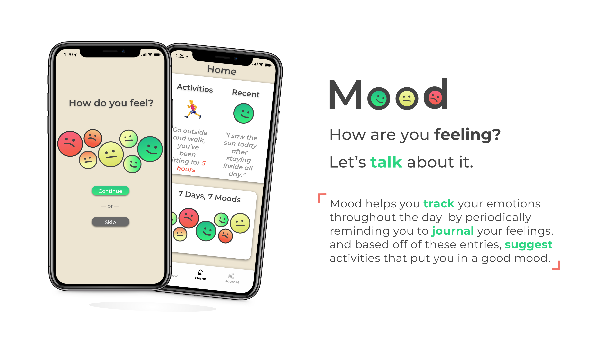
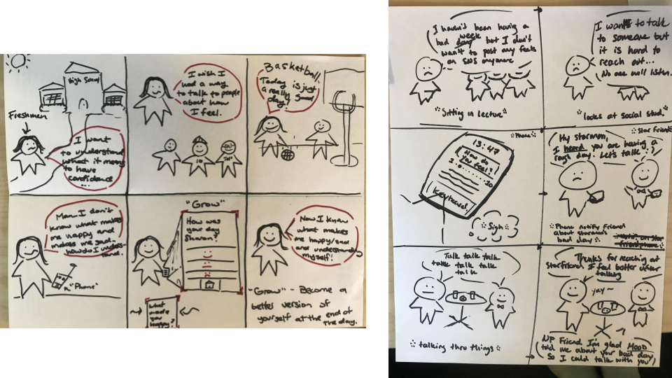
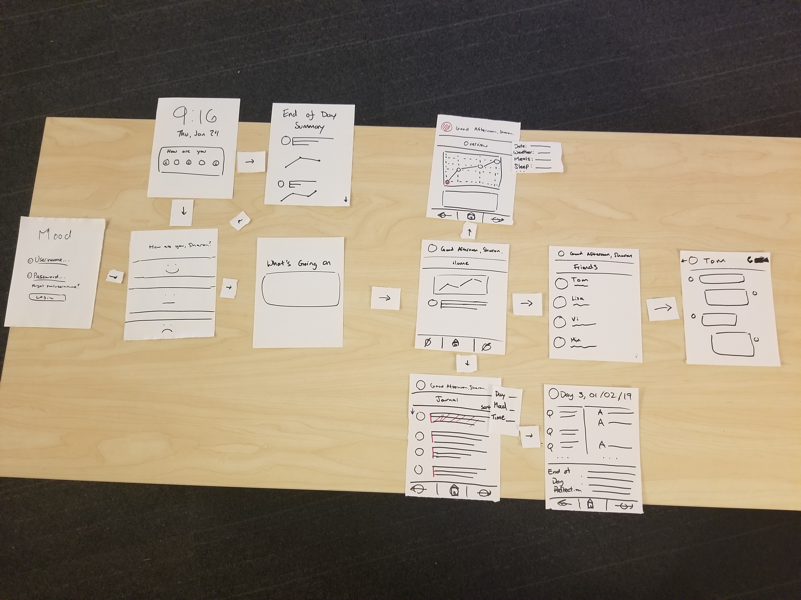
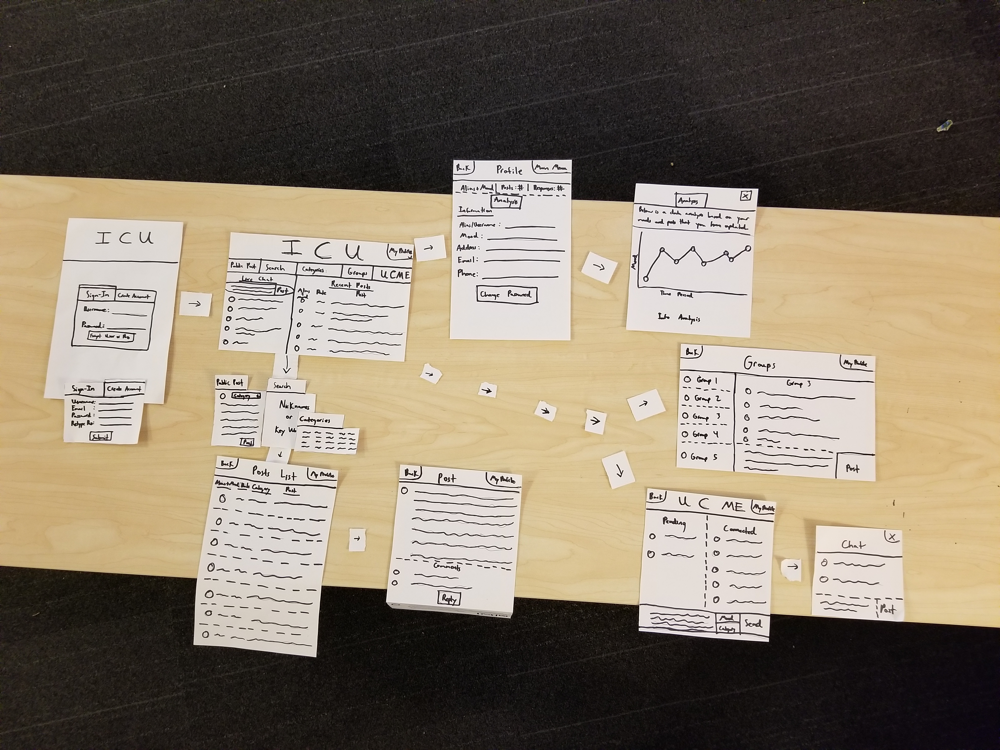
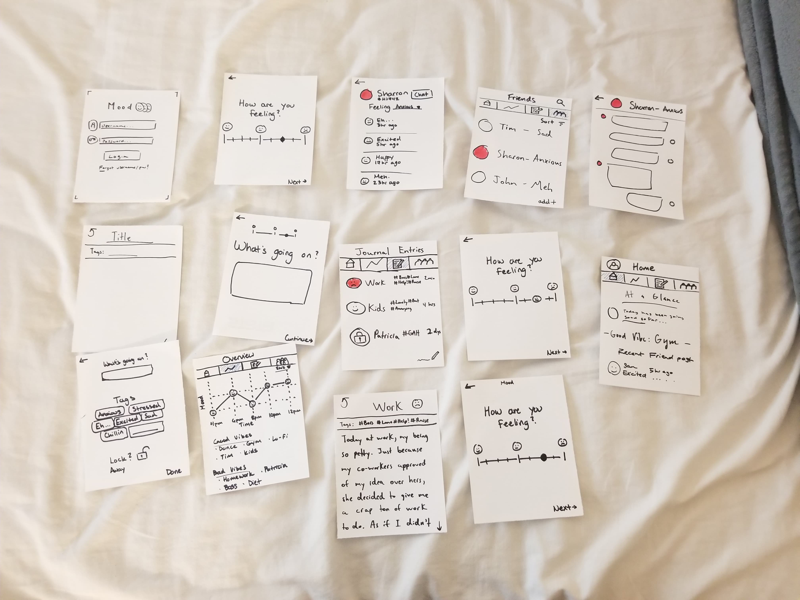
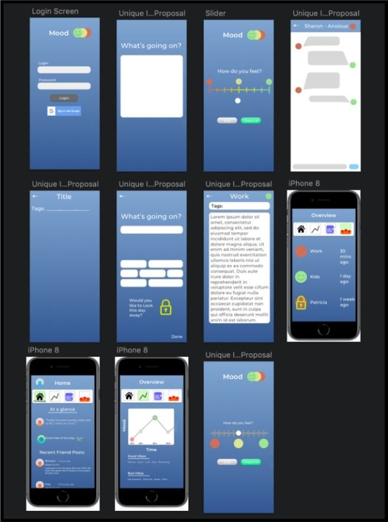
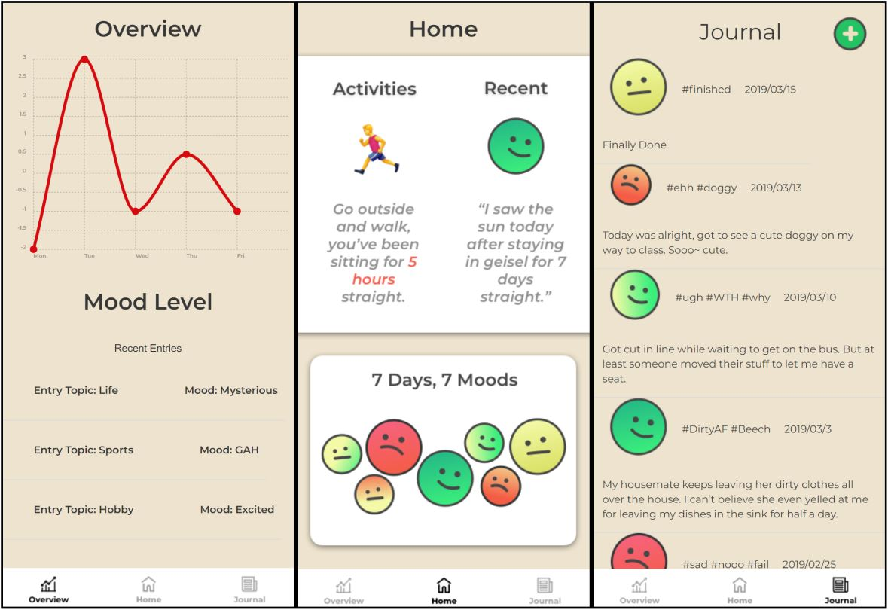

Mood
The Quantified Self
In my Interaction Design class, my team and I were tasked to design a mobile application that would work on exploring ways to support monitoring, reflection, and behavior change by collecting, consuming, and sharing personal relevant information. Some things we considered were:
- How might we help people learn more about their everyday lives through self-tracking?
- How might we help people draw insights from the mass data they collect about themselves?
- How might we encourage people to share information about themselves for the benefit of specific communities?
We found that people have a hard time reflecting and finding out why they are feeling a certain way at the end of the day, so we designed Mood to help solve this problem.
My role: UX/UI Designer • Product Designer • Web Developer
Duration: 3 months
Teammates: Huy Le, Winson Dieu
Needfinding
My team and I began by going out and each observing three students in their daily lives and take note of the successes, breakdowns, and latent opportunities that occur. We then followed up with the person to ask some questions about what we observed.
Some insights we disovered were:- People find it hard to juggle work, school, and extracurricular activities.
- They were overwhelmed by the pace and schedule of the quarter system.
- People found it difficult to find times in between their commitments to relax.
- They tend to do multiple things at the same time (ie. eat and do homework, or study and reply to emails.
- People find it hard to reach out to others and start a conversation about their mood.
- People end their day feeling exhausted, stressed, or sometimes happy but unsure why.
Experience Prototyping
Point of ViewFrom the insights that we gathered, our team created a point of view statement to illustrate some of the users' needs.
"We believe that in this day and age, it is hard to reflect on one's own emotional state. We might end a day good or bay and not necessarily remember the reasons that led up to this emotion. If someone is in a bad mood, we think that people have a hard time opening up to one another possibly due to the fact that we are afraid of being judged. Therefore, we try to hide and bottle up our feeling from those around us and don't seek out a shoulder to cry on or an ear to listen. Even if we have close friends or loved ones in our lives, it's hard to take the first step to ask from help or someone to talk to. Because of this, people struggle to reflect and grow into a better version of themselves".
Storyboarding
Using our point of view as inspiration, we generated three different design ideas that address or engage our point of view to address a user's need.
We created three diverging storyboards that focus on the high-level information from our point of view statement to broaden our possible ideas before narrowing down and working on one. Here are a couple.
Paper Prototypes
We laid out our storyboards and through about the various strength and weaknesses of each design, as well as how well each of them achieved the goals in the point of view statement. From this, we created two paper prototypes that both connected to our point of view, but in different ways.
This first prototype (P1) focused on providing the user with an overall quick and easy insight to their mood based on their input at the beginning of the app.
This second prototype (P2) approached the problem by focusing on a more analytical approach. This provided the user with a lot of data and analytics of their mood and journal entries.
User Feedback
Heuristic EvaluationWith our two prototypes, our team went out and conducted three different Heuristic Evaluation sessions for each of the paper prototypes, with other students in the class.
Some insights we learned from user feedback:- P1 should emphasize a simple mood slider to understand shifts in the user's behavior.
- P1 emphasized socializing and discussion of life/relevant topics to grow but does not let people directly reflect on their actions or mental state.
- P2 had room for improvement with aesthetic and minimalist design due to the overload of information to the user.
- P2 emphasized logging and reflecting but didn't include the option to use socializing to improve the user's mental well being.
- Both prototypes lacked confirmation messaged to help users prevent and or recover from errors.
From these insights, we make an iteration of our prototype that combined the best elements from each of the two prototypes.
Revisiting the design brief
Point of ViewWe revisited and focused our point of view statement based off of the user testing and prototyping we conducted.
"People have a difficult time reflecting on their daily lives resulting in an inhibition of one's personal and emotional growth".
User BaseAfter revisiting out idea, we concluded that this product could be used by any person that either wants to track and improve her/his life or someone that is emotionally injured and needs a stable way to help herself/himself feel in control of these emotions.
Core InteractionFrom the feedback and point of view statement, we decided that the core interactivity of our app should consist of journal entries about one's mood throughout the day. These would give the user the ability to reflect back on things that could be the source or reason for their current mood.
Meat on the Bones
At this point, we were developing the core interactions from the digital wireframe. We revisited out point of view and inspiration to make sure we weren't losing sight of our initial findings. We also wanted to make sure our application had unique interactions, so we compared our application with other ways of completing the same task.
How does a user complete this task without our app?Without our application, the user could write in a journal at the end of every day or use an app called M3 that has you fill out a 3-minute form to test if you are at risk of depression. However, this does not let the user reflect back on these entries or provide them with a means of positivity.

Ready for Testing
For out user testing, there were a few things research questions developed to gain insights on how the user feels and interacts with the app.
How do users go about unwinding their day?We wanted to understand if and how our application fits into the daily lives of the users.
Do users self reflect? If no, why not. If so, how so?We wanted to understand if our app provided the proper means of reflecting and if this medium will promote users to do so.
What were the first impressions of the app after using it?This wouold give us some more insights on how to design the app and give a friendly and straightforward first time experience.
Testing our Prototype
We tested our prototype with three different people.
Some of our insights gained from testing:- The first user found it hard to reflect because of a lack of time in his day due to the prioritization of other things and the monotony of his days.
- It makes it difficult for him to find a reason to self reflect on days that seem to mesh.
- The second user felt that the app's features felt like fragmented pieces rather than a unified system.
- They found an inherent flaw with their usual planning system; you need a planner for a planner, and there is no notification to remind someone to update and use a physical planner.
- The third was not clear on the system flow of the app.
Results!
After implementing changes based on our user testing feedback, we developed the final prototype of our mobile application to present to some designers and entrepreneurs in industry. This is our final poster for our presentation along with an advertisement for our app.
Final Thoughts
This project was a lot of work to do with only a group of three people, however it was extremely fun going through and experiencing every aspect of design and development. It really made me learn quickly on how to develop and prototype each part rapidly. Moving forward, I would love to dive deeper into each step of the process and develop this into a full-fledged app.